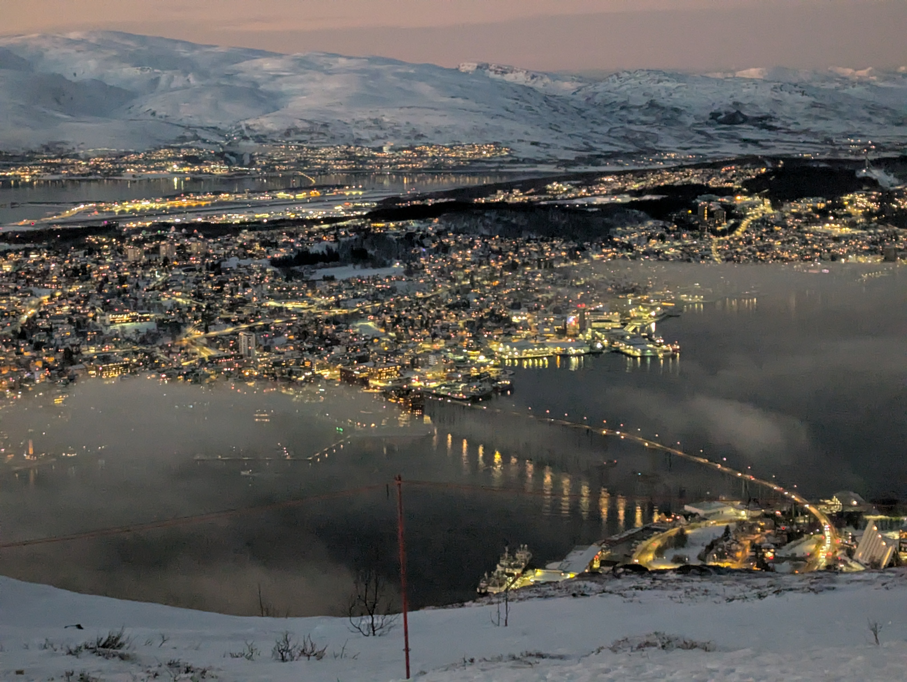
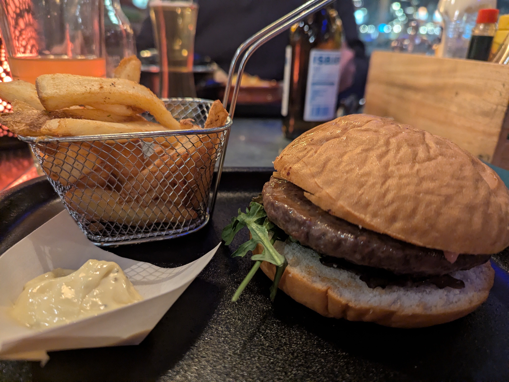
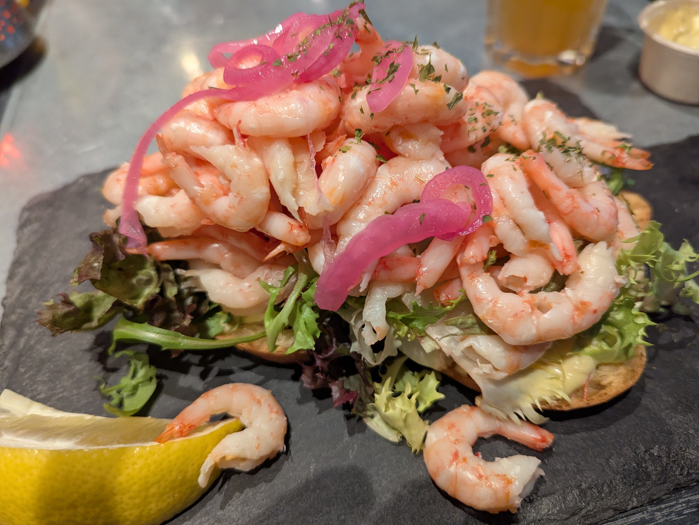

FROM THE BLOG
<Going on Holiday with IBS and Being Gluten Free
Going on holiday can be a scary thing when you have IBS and are gluten free. It can feel a bit like going into the unknown. Where will we eat? Will I find food I can eat? Will there be toilets when I need them?
There can be so many things going through your mind before you even set off. But with a little planning and some research online before you go, you can find out a lot of the things you need to know and hopefully make your holiday much more enjoyable.
My First Holiday After My IBS Diagnosis
My first holiday after my diagnosis was to Somerset. We stayed in an Airbnb for three nights, which was perfect because it meant we could take all the foods I needed with us.
We ate out a few times while we were there, and the places we chose had great gluten-free menus, so I had no problems finding something safe to eat.
I also had no trouble finding toilets, which was a big relief!
My First Holiday Abroad

My next holiday was abroad.
When I booked it through the travel agent, I was asked if I had any allergies. Travelling to Tromsø in Norway had been a dream of mine for a long time, and although I was excited, I was actually more worried about finding toilets than I was about finding gluten-free food.
When the day finally arrived, off I went!
We stayed at the Radisson Blu in Tromsø, and it was amazing.
On the first morning at breakfast, there was all the usual food, but in one corner there was a dedicated gluten-free area. They had bread, two types of cereal, crackers and cakes. There was even lactose-free spread for anyone who needed it and, importantly, a separate gluten-free toaster.
Most mornings I had cereal, toast and a freshly cooked egg from the chef's egg station.
Finding Gluten-Free Food in Tromsø

That evening we had to find our own dinner, so four of us from the group set off to explore.
We came across a restaurant on the harbour front and, right on the front of the menu, it proudly said that they offered gluten-free options.
I was able to enjoy a delicious reindeer burger served in a gluten-free bun.
The food was so good that everyone wanted to go back the following evening. I certainly didn't mind because I already knew they catered for gluten-free diets.
This time I tried a whale steak, which was something completely different and a real experience.
The next day at lunchtime, the people I was with wanted to return there again. I could have suggested trying somewhere else, but it was much easier to go somewhere I already knew was safe rather than spending time searching for another gluten-free restaurant.
This time I ordered the most delicious prawn open sandwich.

What About Finding Toilets?
One of my biggest worries before the trip had been my IBS and whether I would be able to find toilets when I needed them.
Thankfully, it turned out to be nothing to worry about.
My IBS stayed settled throughout the holiday, and every excursion we went on had plenty of opportunities to use the toilet.
Don't Let IBS Stop You Travelling
If you're worried about going away for the first time after being diagnosed, I completely understand. It can feel scary when you don't know what to expect.
But from my experience, many travel companies, hotels and restaurants are incredibly accommodating when it comes to gluten-free diets.
Do some research before you travel, check where you might be able to eat and plan ahead where you can.
Most importantly, don't let IBS or being gluten free stop you from seeing new places.
With a little planning, you really can enjoy your holiday and make some wonderful memories.